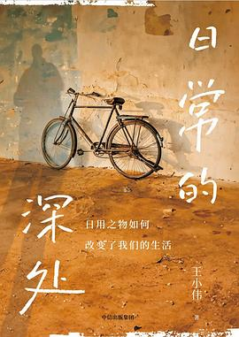

《日常的深处》

总体观点
现代技术在带来无上便利的同时，正悄然切断人与真实世界的物理连接与肉身感知。日常器物从承载人伦情感的“物（Thing）”，退化为冰冷高效但缺乏意义的“装置（Device）”。
从外卖预制菜到微信电子镣铐，算法与消费主义将生机勃勃的“附近”彻底碾平。人被困在屏幕编织的抽象幻觉中，患上了严重的感官麻木与精神漂泊症。
哲学的使命在于带领我们“回到事物本身”。通过重新凝视锅碗瓢盆、手作劳作与面对面的实体交往，夺回对日常生活的专注与爱，在虚无中重建精神的锚桩。
核心观点
-
1. 外卖和预制菜杀死了烹饪的仪式感与家庭粘合剂
下厨做饭不仅是卡路里摄入，更是一家人在水汽升腾、择菜切肉中共同维系的生活疗愈仪式。
两口子天天对着塑料盒吃外卖，吃饭变成单调的饲料投喂，餐桌上没有锅气与对话，家庭情感纽带不知不觉走向瓦解。 -
2. 城市公寓沦为投资理财代码，失去了“家作为庇护所”的本真
房子被炒成了金融衍生品和学区筹码，居于其中的人整天算计房价涨跌，无法沉浸式安居。
为了还巨额房贷拼命加班透支身体，回到家面对冷冰冰的样板间不敢随意钉钉子挂画，人在自己买下的房子里反而成了过客。 -
3. 电视的堕落：从全家围坐的情感图腾沦为孤立的废铁
曾经大屁股黑白电视是凝聚全家甚至邻里的社交中心，如今客厅巨屏智能电视充斥开机广告与VIP套路沦为摆设。
童年夏夜全村孩子挤在院子里看十四寸黑白电视《西游记》欢声笑语，现在人手一部手机各自刷短视频，同坐沙发却形同陌路。 -
4. 现代大工厂学校沦为生产“标准做题螺丝钉”的巨机器
夸美纽斯式流水线班级制消灭了教育因材施教的温度，学生被高度数字化的分数考评规训得厌学焦虑。
成千上万的孩子被关在装有铁栅栏的封闭大校里题海战术，失去了在自然小路中观察树叶生长的闲暇与感知生命的能力。 -
5. 微信成为随时在线的“电子镣铐”，俗化了分享的真意
即时通讯抹平了工作与私生活的神圣边界，朋友圈点赞沦为表演性社交，人们患上了微信恐音症与打卡强迫症。
深夜洗澡时听到微信提示音心跳骤停，生怕是领导的工作派发，朋友圈精修九宫格图片只为收获塑料点赞而非真实分享。
全书结构
-
第一章 吃饱与吃好
剖析外卖食品工业化如何摧毁家庭餐桌的锅气与温度，反思营养主义对丰富美食体验的窄化。
指出天天靠外卖塑料盒解决三餐的小夫妻最容易心生疏离，因为做饭的洗切炒本是维系人际温情的重要仪式。 -
第二章 家的构思与营造
反思现代商品房买房焦虑与金融化异化，呼吁把房子从升值代码重新还原为人格疗愈的庇护所。
分析都市青年掏空六个钱包背负数百万房贷，反而在精装样板间里不敢大声说话，丧失了对家的真实掌控。 -
第三章 衣服：一块仪式化了的布
探讨服饰从蔽体保暖的自然织物演变为社会身份阶层表演的仪式符号，审视快时尚泛滥的虚无。
衣柜塞满穿了一两次就被淘汰的廉价化纤快时尚服装，人们在无休止的网购换装中反而彻底迷失了身体舒适感。 -
第四章 林中路与康庄道
对比高速公路通勤的高效冷酷与自然林间小路的悠然漫步，阐明身体行走的哲学治愈力。
每天在封闭地铁车厢里像沙丁鱼一样通勤打卡，唯有周末在乡间无名泥土小路上散步，才能重新找回双脚大地的触感。 -
第五章 电视的堕落
梳理电视机从80年代全村围坐共享的神圣聚焦点，退化为客厅被智能开机广告与VIP套路绑架的废弃巨屏。
回忆童年几十个邻居搬小板凳挤在院子里看老黑白电视转播世界杯的热血激情，反衬当下智能电视沦为孤独摆设。 -
第六章 小城打印店
讲述五笔打字到激光喷墨打印对文字书写温度的剥离，探讨铅字与书法在数码时代遭遇的彻底祛魅。
曾经需要研墨悬腕写下的家书借由打印店千篇一律的宋体秒级生成，文字的敬畏感随之瓦解成冰冷的行政流水作业。 -
第七章 录像厅与大启蒙
回望90年代小镇录像厅作为大众文化狂欢与性启蒙温床的历史角色，透视生猛市井活力的消逝。
县城青年在烟雾缭绕的通宵录像厅里看香港枪战片与周星驰喜剧，在逼仄肮脏的黑屋里获得了对广阔现代世界的最初想象。 -
第八章 巨机器学校
批判现代大工业流水线模式的应试大校，揭露其如何把活生生的青少年规训为标准做题工具。
封闭寄宿式超级中学以精确到秒的作息表严密控制学生吃饭跑操甚至上厕所，把求知乐趣变成了摧毁灵性的做题磨损。 -
第九章 巫与医：体验治疗
透视现代三甲医院大型医疗仪器流水线检查如何将病人客体化为待维修机器，反思医学人文关怀的失落。
病患排队三小时躺进轰鸣冰冷的核磁共振仪里，医生仅看胶片指标开药，患者在冰冷的数据孤岛中感受不到丝毫同理心。 -
第十章 手机与现实生产
深入剖析智能手机如何从通讯工具蜕变为现实世界的生产与中介者，垄断现代人全部注意力和感知力。
从早到晚盯着发光玻璃屏，现实生活中的落日余晖、鸟叫虫鸣完全被算法推送的短视频信息茧房屏蔽吞噬。 -
第十一章 微信与分享的俗化
揭批即时通讯软件消灭了休息神圣性的罪证，剖析朋友圈表演性点赞对人际真实分享精神的平庸化。
打工人患上微信未读红点恐惧症，朋友圈发送九张精修咖啡美照只为换取虚荣点赞，真实的孤独却无处诉说。 -
第十二章 断舍离与囤积癖
反思走火入魔的极端“断舍离”如何沦为资本消费主义新噱头，呼吁重建重情惜物、物尽其用的深情日常。
跟风把旧物扔光转头又买进昂贵的极简收纳箱，作者倡导留存带有祖辈记忆的老木桌，在岁月包浆中体悟器物温存。